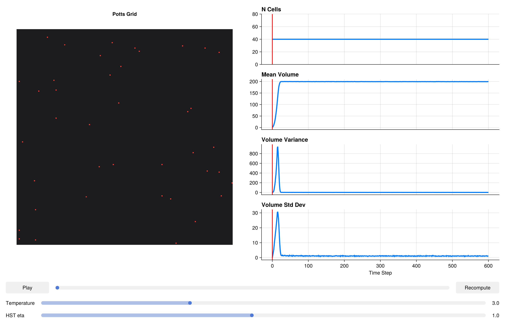

using CairoMakie
CairoMakie.activate!()Thermodynamic HST Penalties
The classic Potts volume penalty HV = λ(V - Vtarget)² is convenient but thermodynamically inconsistent at finite temperature. The problem is that it treats the target volume as a fixed external field — the cell behaves as if coupled to a spring whose other end is nailed to the wall. This violates detailed balance for the fluctuations of V_target itself: if the target can evolve (e.g., after growth or mitosis), the equilibrium distribution of actual volumes does not match a Boltzmann distribution at temperature T.
The Homeostatic Stochastic Trapping (HST) penalty fixes this by modelling the target volume as an Ornstein–Uhlenbeck (OU) process that relaxes toward the actual volume with a timescale controlled by eta (η). In the limit η → 0, the HST penalty converges to the classical quadratic. For η > 0, the equilibrium distribution of volumes is Gaussian with a variance that depends correctly on both T and λ — satisfying detailed balance and giving physically correct thermal fluctuations.
Practical recommendation: use HSTVolumeComponent (and the analogous HST surface area component) whenever your simulation is quantitative or when volume fluctuations are an observable of interest. The overhead compared to the classical quadratic is negligible.
Packages
using PottsToolkit
using MakiePotts
using Statistics: mean, std, varCell Types
CellA = CellType(:CellA)
Medium = CellType(:Medium, is_background = true)CellType(:Medium, true)Classical System (Reference)
VolumeComponent uses the standard quadratic penalty H = λ(V−V₀)². We use this as the baseline against which HST is compared.
sys_classical = PottsSystem(
cell_types = [Medium, CellA],
penalties = [
VolumeComponent(CellA => (λ = 5.0f0, target = 200)),
AdhesionComponent(
(CellA, CellA) => 2.0f0,
(CellA, Medium) => 16.0f0
)
]
)PottsSystem{Tuple{VolumeComponent{Rigid}, AdhesionComponent{Rigid, false}}, Tuple{}}(CellType[CellType(:Medium, true), CellType(:CellA, false)], (VolumeComponent{Rigid}(Dict{CellType, @NamedTuple{target::Float32, λ::Float32}}(CellType(:CellA, false) => (target = 200.0, λ = 5.0))), AdhesionComponent{Rigid, false}(Dict{Tuple{CellType, CellType}, Float32}((CellType(:CellA, false), CellType(:CellA, false)) => 2.0, (CellType(:Medium, true), CellType(:CellA, false)) => 16.0))), (), 10)HST System
HSTVolumeComponent takes the same per-cell-type (λ, target) parameters as VolumeComponent, plus a global eta (η) that sets the OU relaxation rate. η has units of inverse MCS; η = 1.0 means the OU process relaxes fully within ~1 MCS, which is appropriate for well-mixed simulations. η = 0.1 gives slower relaxation, suitable when cells grow on timescales of tens of MCS.
SurfaceAreaComponent is included to constrain cell shape alongside volume, giving a more realistic mechanical phenotype.
sys_hst = PottsSystem(
cell_types = [Medium, CellA],
penalties = [
HSTVolumeComponent(CellA => (λ = 5.0f0, target = 200); eta = 1.0),
SurfaceAreaComponent(CellA => (λ = 1.0f0, target = 60)),
AdhesionComponent(
(CellA, CellA) => 2.0f0,
(CellA, Medium) => 16.0f0
)
]
)PottsSystem{Tuple{HSTVolumeComponent{Rigid}, SurfaceAreaComponent{Rigid}, AdhesionComponent{Rigid, false}}, Tuple{}}(CellType[CellType(:Medium, true), CellType(:CellA, false)], (HSTVolumeComponent{Rigid}(Dict{CellType, @NamedTuple{target::Float32, λ::Float32}}(CellType(:CellA, false) => (target = 200.0, λ = 5.0)), 1.0f0), SurfaceAreaComponent{Rigid}(Dict{CellType, @NamedTuple{target::Float32, λ::Float32}}(CellType(:CellA, false) => (target = 60.0, λ = 1.0)), 1.0f0), AdhesionComponent{Rigid, false}(Dict{Tuple{CellType, CellType}, Float32}((CellType(:CellA, false), CellType(:CellA, false)) => 2.0, (CellType(:Medium, true), CellType(:CellA, false)) => 16.0))), (), 10)Problems
Identical grid, cell count, and run length for a fair comparison. Both systems get the same random seed via the same algorithm.
prob_classical = PottsProblem(
sys_classical,
Dict(CellA => 40),
(200, 200);
tspan = (0, 600),
topology = VonNeumannTopology{2}()
)
prob_hst = PottsProblem(
sys_hst,
Dict(CellA => 40),
(200, 200);
tspan = (0, 600),
topology = VonNeumannTopology{2}()
)
alg = CheckerboardMetropolis(T = 3.0f0, sweeps_per_step = 10)
sol_classical = solve(prob_classical, alg; saveat = 6)
sol_hst = solve(prob_hst, alg; saveat = 6)retcode: Success
Interpolation: No interpolation
t: 101-element Vector{Int64}:
0
6
12
18
24
30
36
42
48
54
⋮
552
558
564
570
576
582
588
594
600
u: 101-element Vector{Any}:
(grid = UInt32[0x00000000 0x00000000 … 0x00000000 0x00000000; 0x00000000 0x00000000 … 0x00000000 0x00000000; … ; 0x00000000 0x00000000 … 0x00000000 0x00000000; 0x00000000 0x00000000 … 0x00000000 0x00000000], cell_data = @NamedTuple{volumes::Int32, target_volumes::Int32, cell_types::UInt8, target_surface_areas::Int32, pressures::Float32, surface_areas::Int32, tensions::Float32}[(volumes = 1, target_volumes = 200, cell_types = 0x01, target_surface_areas = 60, pressures = 0.0, surface_areas = 4, tensions = 0.0), (volumes = 1, target_volumes = 200, cell_types = 0x01, target_surface_areas = 60, pressures = 0.0, surface_areas = 4, tensions = 0.0), (volumes = 1, target_volumes = 200, cell_types = 0x01, target_surface_areas = 60, pressures = 0.0, surface_areas = 4, tensions = 0.0), (volumes = 1, target_volumes = 200, cell_types = 0x01, target_surface_areas = 60, pressures = 0.0, surface_areas = 4, tensions = 0.0), (volumes = 1, target_volumes = 200, cell_types = 0x01, target_surface_areas = 60, pressures = 0.0, surface_areas = 4, tensions = 0.0), (volumes = 1, target_volumes = 200, cell_types = 0x01, target_surface_areas = 60, pressures = 0.0, surface_areas = 4, tensions = 0.0), (volumes = 1, target_volumes = 200, cell_types = 0x01, target_surface_areas = 60, pressures = 0.0, surface_areas = 4, tensions = 0.0), (volumes = 1, target_volumes = 200, cell_types = 0x01, target_surface_areas = 60, pressures = 0.0, surface_areas = 4, tensions = 0.0), (volumes = 1, target_volumes = 200, cell_types = 0x01, target_surface_areas = 60, pressures = 0.0, surface_areas = 4, tensions = 0.0), (volumes = 1, target_volumes = 200, cell_types = 0x01, target_surface_areas = 60, pressures = 0.0, surface_areas = 4, tensions = 0.0) … (volumes = 1, target_volumes = 200, cell_types = 0x01, target_surface_areas = 60, pressures = 0.0, surface_areas = 4, tensions = 0.0), (volumes = 1, target_volumes = 200, cell_types = 0x01, target_surface_areas = 60, pressures = 0.0, surface_areas = 4, tensions = 0.0), (volumes = 1, target_volumes = 200, cell_types = 0x01, target_surface_areas = 60, pressures = 0.0, surface_areas = 4, tensions = 0.0), (volumes = 1, target_volumes = 200, cell_types = 0x01, target_surface_areas = 60, pressures = 0.0, surface_areas = 4, tensions = 0.0), (volumes = 1, target_volumes = 200, cell_types = 0x01, target_surface_areas = 60, pressures = 0.0, surface_areas = 4, tensions = 0.0), (volumes = 1, target_volumes = 200, cell_types = 0x01, target_surface_areas = 60, pressures = 0.0, surface_areas = 4, tensions = 0.0), (volumes = 1, target_volumes = 200, cell_types = 0x01, target_surface_areas = 60, pressures = 0.0, surface_areas = 4, tensions = 0.0), (volumes = 1, target_volumes = 200, cell_types = 0x01, target_surface_areas = 60, pressures = 0.0, surface_areas = 4, tensions = 0.0), (volumes = 1, target_volumes = 200, cell_types = 0x01, target_surface_areas = 60, pressures = 0.0, surface_areas = 4, tensions = 0.0), (volumes = 1, target_volumes = 200, cell_types = 0x01, target_surface_areas = 60, pressures = 0.0, surface_areas = 4, tensions = 0.0)], N_cells = Base.RefValue{Int64}(40))
(grid = UInt32[0x00000000 0x00000000 … 0x00000000 0x00000000; 0x00000000 0x00000000 … 0x00000000 0x00000000; … ; 0x00000000 0x00000000 … 0x00000000 0x00000000; 0x00000000 0x00000000 … 0x00000000 0x00000000], cell_data = @NamedTuple{volumes::Int32, target_volumes::Int32, cell_types::UInt8, target_surface_areas::Int32, pressures::Float32, surface_areas::Int32, tensions::Float32}[(volumes = 32, target_volumes = 200, cell_types = 0x01, target_surface_areas = 60, pressures = -1679.4835, surface_areas = 36, tensions = -46.48008), (volumes = 29, target_volumes = 200, cell_types = 0x01, target_surface_areas = 60, pressures = -1715.6897, surface_areas = 26, tensions = -67.359184), (volumes = 23, target_volumes = 200, cell_types = 0x01, target_surface_areas = 60, pressures = -1773.5576, surface_areas = 28, tensions = -64.61939), (volumes = 32, target_volumes = 200, cell_types = 0x01, target_surface_areas = 60, pressures = -1696.0323, surface_areas = 40, tensions = -44.751026), (volumes = 22, target_volumes = 200, cell_types = 0x01, target_surface_areas = 60, pressures = -1776.9083, surface_areas = 30, tensions = -59.104687), (volumes = 22, target_volumes = 200, cell_types = 0x01, target_surface_areas = 60, pressures = -1785.9773, surface_areas = 24, tensions = -69.00131), (volumes = 14, target_volumes = 200, cell_types = 0x01, target_surface_areas = 60, pressures = -1855.0315, surface_areas = 22, tensions = -75.17245), (volumes = 6, target_volumes = 200, cell_types = 0x01, target_surface_areas = 60, pressures = -1952.5214, surface_areas = 10, tensions = -98.72682), (volumes = 7, target_volumes = 200, cell_types = 0x01, target_surface_areas = 60, pressures = -1941.7222, surface_areas = 16, tensions = -90.3072), (volumes = 44, target_volumes = 200, cell_types = 0x01, target_surface_areas = 60, pressures = -1553.7166, surface_areas = 50, tensions = -23.229647) … (volumes = 51, target_volumes = 200, cell_types = 0x01, target_surface_areas = 60, pressures = -1494.9498, surface_areas = 56, tensions = -11.579438), (volumes = 18, target_volumes = 200, cell_types = 0x01, target_surface_areas = 60, pressures = -1820.488, surface_areas = 22, tensions = -75.44629), (volumes = 11, target_volumes = 200, cell_types = 0x01, target_surface_areas = 60, pressures = -1884.1023, surface_areas = 18, tensions = -84.455215), (volumes = 25, target_volumes = 200, cell_types = 0x01, target_surface_areas = 60, pressures = -1764.819, surface_areas = 30, tensions = -62.367065), (volumes = 36, target_volumes = 200, cell_types = 0x01, target_surface_areas = 60, pressures = -1656.4171, surface_areas = 46, tensions = -27.077215), (volumes = 33, target_volumes = 200, cell_types = 0x01, target_surface_areas = 60, pressures = -1698.5145, surface_areas = 40, tensions = -37.13161), (volumes = 14, target_volumes = 200, cell_types = 0x01, target_surface_areas = 60, pressures = -1860.5251, surface_areas = 20, tensions = -82.72705), (volumes = 2, target_volumes = 200, cell_types = 0x01, target_surface_areas = 60, pressures = -1986.965, surface_areas = 6, tensions = -105.72558), (volumes = 24, target_volumes = 200, cell_types = 0x01, target_surface_areas = 60, pressures = -1765.3579, surface_areas = 34, tensions = -53.47765), (volumes = 21, target_volumes = 200, cell_types = 0x01, target_surface_areas = 60, pressures = -1802.263, surface_areas = 26, tensions = -69.93413)], N_cells = Base.RefValue{Int64}(40))
(grid = UInt32[0x00000027 0x00000027 … 0x00000000 0x00000000; 0x00000000 0x00000027 … 0x00000000 0x00000000; … ; 0x00000000 0x00000000 … 0x00000000 0x00000000; 0x00000000 0x00000027 … 0x00000000 0x00000000], cell_data = @NamedTuple{volumes::Int32, target_volumes::Int32, cell_types::UInt8, target_surface_areas::Int32, pressures::Float32, surface_areas::Int32, tensions::Float32}[(volumes = 115, target_volumes = 200, cell_types = 0x01, target_surface_areas = 60, pressures = -884.19464, surface_areas = 76, tensions = 35.89989), (volumes = 88, target_volumes = 200, cell_types = 0x01, target_surface_areas = 60, pressures = -1122.454, surface_areas = 62, tensions = 6.5699778), (volumes = 88, target_volumes = 200, cell_types = 0x01, target_surface_areas = 60, pressures = -1128.2465, surface_areas = 68, tensions = 14.874008), (volumes = 105, target_volumes = 200, cell_types = 0x01, target_surface_areas = 60, pressures = -951.59766, surface_areas = 74, tensions = 30.028345), (volumes = 82, target_volumes = 200, cell_types = 0x01, target_surface_areas = 60, pressures = -1187.5311, surface_areas = 70, tensions = 17.199167), (volumes = 93, target_volumes = 200, cell_types = 0x01, target_surface_areas = 60, pressures = -1074.3228, surface_areas = 74, tensions = 25.349445), (volumes = 86, target_volumes = 200, cell_types = 0x01, target_surface_areas = 60, pressures = -1165.9945, surface_areas = 64, tensions = 2.1623454), (volumes = 54, target_volumes = 200, cell_types = 0x01, target_surface_areas = 60, pressures = -1482.2637, surface_areas = 60, tensions = -3.6748934), (volumes = 66, target_volumes = 200, cell_types = 0x01, target_surface_areas = 60, pressures = -1359.3146, surface_areas = 76, tensions = 31.046183), (volumes = 117, target_volumes = 200, cell_types = 0x01, target_surface_areas = 60, pressures = -844.771, surface_areas = 108, tensions = 97.34365) … (volumes = 120, target_volumes = 200, cell_types = 0x01, target_surface_areas = 60, pressures = -802.08765, surface_areas = 102, tensions = 82.89441), (volumes = 61, target_volumes = 200, cell_types = 0x01, target_surface_areas = 60, pressures = -1391.7574, surface_areas = 68, tensions = 13.507064), (volumes = 56, target_volumes = 200, cell_types = 0x01, target_surface_areas = 60, pressures = -1439.5358, surface_areas = 56, tensions = -10.442439), (volumes = 100, target_volumes = 200, cell_types = 0x01, target_surface_areas = 60, pressures = -1006.4736, surface_areas = 78, tensions = 34.811802), (volumes = 105, target_volumes = 200, cell_types = 0x01, target_surface_areas = 60, pressures = -962.59607, surface_areas = 92, tensions = 62.59278), (volumes = 126, target_volumes = 200, cell_types = 0x01, target_surface_areas = 60, pressures = -742.4869, surface_areas = 98, tensions = 77.95864), (volumes = 74, target_volumes = 200, cell_types = 0x01, target_surface_areas = 60, pressures = -1284.1898, surface_areas = 68, tensions = 9.656535), (volumes = 55, target_volumes = 200, cell_types = 0x01, target_surface_areas = 60, pressures = -1471.372, surface_areas = 56, tensions = -16.906727), (volumes = 87, target_volumes = 200, cell_types = 0x01, target_surface_areas = 60, pressures = -1138.5945, surface_areas = 82, tensions = 43.060738), (volumes = 83, target_volumes = 200, cell_types = 0x01, target_surface_areas = 60, pressures = -1191.3855, surface_areas = 80, tensions = 35.655884)], N_cells = Base.RefValue{Int64}(40))
(grid = UInt32[0x00000027 0x00000027 … 0x00000027 0x00000027; 0x00000027 0x00000027 … 0x00000027 0x00000027; … ; 0x00000027 0x00000000 … 0x00000027 0x00000027; 0x00000027 0x00000027 … 0x00000027 0x00000027], cell_data = @NamedTuple{volumes::Int32, target_volumes::Int32, cell_types::UInt8, target_surface_areas::Int32, pressures::Float32, surface_areas::Int32, tensions::Float32}[(volumes = 202, target_volumes = 200, cell_types = 0x01, target_surface_areas = 60, pressures = -5.5131617, surface_areas = 88, tensions = 53.642868), (volumes = 171, target_volumes = 200, cell_types = 0x01, target_surface_areas = 60, pressures = -291.36353, surface_areas = 88, tensions = 57.96746), (volumes = 186, target_volumes = 200, cell_types = 0x01, target_surface_areas = 60, pressures = -138.21921, surface_areas = 110, tensions = 99.65745), (volumes = 198, target_volumes = 200, cell_types = 0x01, target_surface_areas = 60, pressures = -31.907457, surface_areas = 98, tensions = 76.94773), (volumes = 179, target_volumes = 200, cell_types = 0x01, target_surface_areas = 60, pressures = -212.73775, surface_areas = 108, tensions = 95.52824), (volumes = 196, target_volumes = 200, cell_types = 0x01, target_surface_areas = 60, pressures = -46.67017, surface_areas = 100, tensions = 84.2587), (volumes = 180, target_volumes = 200, cell_types = 0x01, target_surface_areas = 60, pressures = -213.66864, surface_areas = 112, tensions = 107.50317), (volumes = 169, target_volumes = 200, cell_types = 0x01, target_surface_areas = 60, pressures = -326.7161, surface_areas = 130, tensions = 141.98708), (volumes = 171, target_volumes = 200, cell_types = 0x01, target_surface_areas = 60, pressures = -289.05716, surface_areas = 126, tensions = 137.19814), (volumes = 199, target_volumes = 200, cell_types = 0x01, target_surface_areas = 60, pressures = -23.906881, surface_areas = 126, tensions = 134.74777) … (volumes = 196, target_volumes = 200, cell_types = 0x01, target_surface_areas = 60, pressures = -43.96682, surface_areas = 104, tensions = 89.63971), (volumes = 155, target_volumes = 200, cell_types = 0x01, target_surface_areas = 60, pressures = -476.36462, surface_areas = 118, tensions = 117.50681), (volumes = 140, target_volumes = 200, cell_types = 0x01, target_surface_areas = 60, pressures = -593.8834, surface_areas = 92, tensions = 66.587425), (volumes = 181, target_volumes = 200, cell_types = 0x01, target_surface_areas = 60, pressures = -204.38208, surface_areas = 114, tensions = 109.812), (volumes = 200, target_volumes = 200, cell_types = 0x01, target_surface_areas = 60, pressures = -20.840021, surface_areas = 124, tensions = 128.19595), (volumes = 198, target_volumes = 200, cell_types = 0x01, target_surface_areas = 60, pressures = -14.089713, surface_areas = 94, tensions = 71.56883), (volumes = 193, target_volumes = 200, cell_types = 0x01, target_surface_areas = 60, pressures = -63.183594, surface_areas = 114, tensions = 110.9952), (volumes = 139, target_volumes = 200, cell_types = 0x01, target_surface_areas = 60, pressures = -638.05725, surface_areas = 92, tensions = 53.91005), (volumes = 180, target_volumes = 200, cell_types = 0x01, target_surface_areas = 60, pressures = -204.8486, surface_areas = 126, tensions = 132.77397), (volumes = 184, target_volumes = 200, cell_types = 0x01, target_surface_areas = 60, pressures = -156.49004, surface_areas = 116, tensions = 111.514626)], N_cells = Base.RefValue{Int64}(40))
(grid = UInt32[0x00000027 0x00000027 … 0x00000027 0x00000027; 0x00000027 0x00000027 … 0x00000027 0x00000027; … ; 0x00000027 0x00000027 … 0x00000027 0x00000027; 0x00000027 0x00000027 … 0x00000027 0x00000027], cell_data = @NamedTuple{volumes::Int32, target_volumes::Int32, cell_types::UInt8, target_surface_areas::Int32, pressures::Float32, surface_areas::Int32, tensions::Float32}[(volumes = 201, target_volumes = 200, cell_types = 0x01, target_surface_areas = 60, pressures = 6.551037, surface_areas = 84, tensions = 47.55877), (volumes = 200, target_volumes = 200, cell_types = 0x01, target_surface_areas = 60, pressures = 2.7814083, surface_areas = 86, tensions = 54.265827), (volumes = 198, target_volumes = 200, cell_types = 0x01, target_surface_areas = 60, pressures = -16.52274, surface_areas = 100, tensions = 79.72937), (volumes = 202, target_volumes = 200, cell_types = 0x01, target_surface_areas = 60, pressures = 5.329538, surface_areas = 88, tensions = 54.477848), (volumes = 199, target_volumes = 200, cell_types = 0x01, target_surface_areas = 60, pressures = -20.95351, surface_areas = 86, tensions = 55.562717), (volumes = 198, target_volumes = 200, cell_types = 0x01, target_surface_areas = 60, pressures = -26.395817, surface_areas = 96, tensions = 70.49175), (volumes = 200, target_volumes = 200, cell_types = 0x01, target_surface_areas = 60, pressures = -5.469258, surface_areas = 98, tensions = 77.087105), (volumes = 202, target_volumes = 200, cell_types = 0x01, target_surface_areas = 60, pressures = 5.5656443, surface_areas = 118, tensions = 114.27811), (volumes = 201, target_volumes = 200, cell_types = 0x01, target_surface_areas = 60, pressures = -2.8909223, surface_areas = 114, tensions = 106.41653), (volumes = 199, target_volumes = 200, cell_types = 0x01, target_surface_areas = 60, pressures = -10.46347, surface_areas = 108, tensions = 96.959785) … (volumes = 199, target_volumes = 200, cell_types = 0x01, target_surface_areas = 60, pressures = -23.451283, surface_areas = 94, tensions = 66.17488), (volumes = 196, target_volumes = 200, cell_types = 0x01, target_surface_areas = 60, pressures = -44.854134, surface_areas = 114, tensions = 107.70241), (volumes = 200, target_volumes = 200, cell_types = 0x01, target_surface_areas = 60, pressures = 1.8082051, surface_areas = 100, tensions = 85.181786), (volumes = 200, target_volumes = 200, cell_types = 0x01, target_surface_areas = 60, pressures = 0.8527813, surface_areas = 104, tensions = 84.6045), (volumes = 201, target_volumes = 200, cell_types = 0x01, target_surface_areas = 60, pressures = -0.27118945, surface_areas = 106, tensions = 90.59507), (volumes = 197, target_volumes = 200, cell_types = 0x01, target_surface_areas = 60, pressures = -30.961582, surface_areas = 88, tensions = 52.207573), (volumes = 201, target_volumes = 200, cell_types = 0x01, target_surface_areas = 60, pressures = -5.230749, surface_areas = 102, tensions = 86.80741), (volumes = 199, target_volumes = 200, cell_types = 0x01, target_surface_areas = 60, pressures = -17.169317, surface_areas = 96, tensions = 72.76008), (volumes = 202, target_volumes = 200, cell_types = 0x01, target_surface_areas = 60, pressures = 1.7375546, surface_areas = 112, tensions = 100.62956), (volumes = 200, target_volumes = 200, cell_types = 0x01, target_surface_areas = 60, pressures = -0.025767565, surface_areas = 100, tensions = 81.54607)], N_cells = Base.RefValue{Int64}(40))
(grid = UInt32[0x00000027 0x00000027 … 0x00000000 0x00000027; 0x00000027 0x00000027 … 0x00000027 0x00000027; … ; 0x00000027 0x00000027 … 0x00000000 0x00000000; 0x00000027 0x00000027 … 0x00000000 0x00000000], cell_data = @NamedTuple{volumes::Int32, target_volumes::Int32, cell_types::UInt8, target_surface_areas::Int32, pressures::Float32, surface_areas::Int32, tensions::Float32}[(volumes = 201, target_volumes = 200, cell_types = 0x01, target_surface_areas = 60, pressures = 5.254292, surface_areas = 82, tensions = 43.718357), (volumes = 201, target_volumes = 200, cell_types = 0x01, target_surface_areas = 60, pressures = -1.6849496, surface_areas = 84, tensions = 45.84832), (volumes = 199, target_volumes = 200, cell_types = 0x01, target_surface_areas = 60, pressures = -5.2122264, surface_areas = 94, tensions = 66.69445), (volumes = 199, target_volumes = 200, cell_types = 0x01, target_surface_areas = 60, pressures = -9.523426, surface_areas = 82, tensions = 43.478416), (volumes = 200, target_volumes = 200, cell_types = 0x01, target_surface_areas = 60, pressures = -6.6776953, surface_areas = 82, tensions = 50.891193), (volumes = 201, target_volumes = 200, cell_types = 0x01, target_surface_areas = 60, pressures = 16.6972, surface_areas = 86, tensions = 50.78975), (volumes = 199, target_volumes = 200, cell_types = 0x01, target_surface_areas = 60, pressures = -11.764126, surface_areas = 98, tensions = 77.523705), (volumes = 200, target_volumes = 200, cell_types = 0x01, target_surface_areas = 60, pressures = -12.880618, surface_areas = 114, tensions = 105.18398), (volumes = 198, target_volumes = 200, cell_types = 0x01, target_surface_areas = 60, pressures = -15.111293, surface_areas = 110, tensions = 100.95663), (volumes = 199, target_volumes = 200, cell_types = 0x01, target_surface_areas = 60, pressures = -3.1230345, surface_areas = 106, tensions = 91.47039) … (volumes = 200, target_volumes = 200, cell_types = 0x01, target_surface_areas = 60, pressures = -10.645239, surface_areas = 88, tensions = 60.05425), (volumes = 198, target_volumes = 200, cell_types = 0x01, target_surface_areas = 60, pressures = -16.384438, surface_areas = 106, tensions = 89.64775), (volumes = 201, target_volumes = 200, cell_types = 0x01, target_surface_areas = 60, pressures = 14.694603, surface_areas = 90, tensions = 60.6492), (volumes = 199, target_volumes = 200, cell_types = 0x01, target_surface_areas = 60, pressures = -7.5056334, surface_areas = 92, tensions = 70.2461), (volumes = 200, target_volumes = 200, cell_types = 0x01, target_surface_areas = 60, pressures = 2.7657115, surface_areas = 92, tensions = 62.577473), (volumes = 199, target_volumes = 200, cell_types = 0x01, target_surface_areas = 60, pressures = 0.48503757, surface_areas = 86, tensions = 50.94877), (volumes = 199, target_volumes = 200, cell_types = 0x01, target_surface_areas = 60, pressures = -16.557457, surface_areas = 100, tensions = 80.3979), (volumes = 202, target_volumes = 200, cell_types = 0x01, target_surface_areas = 60, pressures = 14.321499, surface_areas = 78, tensions = 34.625977), (volumes = 198, target_volumes = 200, cell_types = 0x01, target_surface_areas = 60, pressures = -19.310469, surface_areas = 112, tensions = 99.50017), (volumes = 198, target_volumes = 200, cell_types = 0x01, target_surface_areas = 60, pressures = -6.532733, surface_areas = 94, tensions = 70.38025)], N_cells = Base.RefValue{Int64}(40))
(grid = UInt32[0x00000027 0x00000027 … 0x00000000 0x00000000; 0x00000027 0x00000027 … 0x00000000 0x00000000; … ; 0x00000027 0x00000027 … 0x00000000 0x00000000; 0x00000027 0x00000027 … 0x00000000 0x00000000], cell_data = @NamedTuple{volumes::Int32, target_volumes::Int32, cell_types::UInt8, target_surface_areas::Int32, pressures::Float32, surface_areas::Int32, tensions::Float32}[(volumes = 202, target_volumes = 200, cell_types = 0x01, target_surface_areas = 60, pressures = 14.663246, surface_areas = 78, tensions = 34.289017), (volumes = 198, target_volumes = 200, cell_types = 0x01, target_surface_areas = 60, pressures = 5.7227116, surface_areas = 78, tensions = 36.967716), (volumes = 201, target_volumes = 200, cell_types = 0x01, target_surface_areas = 60, pressures = 5.1856146, surface_areas = 92, tensions = 63.164307), (volumes = 200, target_volumes = 200, cell_types = 0x01, target_surface_areas = 60, pressures = -9.636368, surface_areas = 78, tensions = 34.433685), (volumes = 199, target_volumes = 200, cell_types = 0x01, target_surface_areas = 60, pressures = 1.9933803, surface_areas = 80, tensions = 47.141254), (volumes = 200, target_volumes = 200, cell_types = 0x01, target_surface_areas = 60, pressures = -2.9348764, surface_areas = 86, tensions = 52.06002), (volumes = 200, target_volumes = 200, cell_types = 0x01, target_surface_areas = 60, pressures = -10.117896, surface_areas = 92, tensions = 58.85444), (volumes = 202, target_volumes = 200, cell_types = 0x01, target_surface_areas = 60, pressures = 3.1385107, surface_areas = 104, tensions = 86.827484), (volumes = 197, target_volumes = 200, cell_types = 0x01, target_surface_areas = 60, pressures = -22.624453, surface_areas = 98, tensions = 75.954636), (volumes = 202, target_volumes = 200, cell_types = 0x01, target_surface_areas = 60, pressures = 11.943516, surface_areas = 104, tensions = 89.621445) … (volumes = 199, target_volumes = 200, cell_types = 0x01, target_surface_areas = 60, pressures = -8.70854, surface_areas = 88, tensions = 56.574238), (volumes = 201, target_volumes = 200, cell_types = 0x01, target_surface_areas = 60, pressures = -5.0061812, surface_areas = 102, tensions = 84.54298), (volumes = 202, target_volumes = 200, cell_types = 0x01, target_surface_areas = 60, pressures = 4.684082, surface_areas = 86, tensions = 51.559296), (volumes = 200, target_volumes = 200, cell_types = 0x01, target_surface_areas = 60, pressures = -3.859595, surface_areas = 90, tensions = 58.652073), (volumes = 197, target_volumes = 200, cell_types = 0x01, target_surface_areas = 60, pressures = -12.523943, surface_areas = 86, tensions = 55.406822), (volumes = 200, target_volumes = 200, cell_types = 0x01, target_surface_areas = 60, pressures = -4.6470423, surface_areas = 82, tensions = 42.449512), (volumes = 201, target_volumes = 200, cell_types = 0x01, target_surface_areas = 60, pressures = 18.68104, surface_areas = 98, tensions = 75.516136), (volumes = 200, target_volumes = 200, cell_types = 0x01, target_surface_areas = 60, pressures = 2.9621978, surface_areas = 76, tensions = 35.433563), (volumes = 199, target_volumes = 200, cell_types = 0x01, target_surface_areas = 60, pressures = -5.9533987, surface_areas = 112, tensions = 103.05763), (volumes = 201, target_volumes = 200, cell_types = 0x01, target_surface_areas = 60, pressures = 26.865807, surface_areas = 94, tensions = 64.09349)], N_cells = Base.RefValue{Int64}(40))
(grid = UInt32[0x00000027 0x00000027 … 0x00000000 0x00000000; 0x00000027 0x00000027 … 0x00000000 0x00000027; … ; 0x00000027 0x00000027 … 0x00000000 0x00000000; 0x00000027 0x00000027 … 0x00000000 0x00000000], cell_data = @NamedTuple{volumes::Int32, target_volumes::Int32, cell_types::UInt8, target_surface_areas::Int32, pressures::Float32, surface_areas::Int32, tensions::Float32}[(volumes = 200, target_volumes = 200, cell_types = 0x01, target_surface_areas = 60, pressures = 23.42588, surface_areas = 76, tensions = 29.304985), (volumes = 201, target_volumes = 200, cell_types = 0x01, target_surface_areas = 60, pressures = 2.2303782, surface_areas = 76, tensions = 35.69752), (volumes = 199, target_volumes = 200, cell_types = 0x01, target_surface_areas = 60, pressures = -13.8789425, surface_areas = 88, tensions = 57.314404), (volumes = 202, target_volumes = 200, cell_types = 0x01, target_surface_areas = 60, pressures = -0.6188674, surface_areas = 76, tensions = 32.081833), (volumes = 200, target_volumes = 200, cell_types = 0x01, target_surface_areas = 60, pressures = 2.1807282, surface_areas = 76, tensions = 28.910357), (volumes = 201, target_volumes = 200, cell_types = 0x01, target_surface_areas = 60, pressures = 12.999922, surface_areas = 86, tensions = 48.998287), (volumes = 200, target_volumes = 200, cell_types = 0x01, target_surface_areas = 60, pressures = 3.264711, surface_areas = 90, tensions = 63.792805), (volumes = 199, target_volumes = 200, cell_types = 0x01, target_surface_areas = 60, pressures = -7.1853995, surface_areas = 102, tensions = 82.28222), (volumes = 201, target_volumes = 200, cell_types = 0x01, target_surface_areas = 60, pressures = 17.222374, surface_areas = 98, tensions = 75.22228), (volumes = 198, target_volumes = 200, cell_types = 0x01, target_surface_areas = 60, pressures = -23.59251, surface_areas = 102, tensions = 81.96709) … (volumes = 198, target_volumes = 200, cell_types = 0x01, target_surface_areas = 60, pressures = -4.5922656, surface_areas = 88, tensions = 57.543564), (volumes = 200, target_volumes = 200, cell_types = 0x01, target_surface_areas = 60, pressures = 11.197163, surface_areas = 102, tensions = 83.77869), (volumes = 199, target_volumes = 200, cell_types = 0x01, target_surface_areas = 60, pressures = -0.40935135, surface_areas = 86, tensions = 53.881985), (volumes = 200, target_volumes = 200, cell_types = 0x01, target_surface_areas = 60, pressures = -12.517242, surface_areas = 90, tensions = 55.86111), (volumes = 200, target_volumes = 200, cell_types = 0x01, target_surface_areas = 60, pressures = -5.60837, surface_areas = 82, tensions = 41.440964), (volumes = 198, target_volumes = 200, cell_types = 0x01, target_surface_areas = 60, pressures = -17.214561, surface_areas = 82, tensions = 47.671947), (volumes = 201, target_volumes = 200, cell_types = 0x01, target_surface_areas = 60, pressures = 24.780987, surface_areas = 96, tensions = 72.93194), (volumes = 198, target_volumes = 200, cell_types = 0x01, target_surface_areas = 60, pressures = -0.51732063, surface_areas = 76, tensions = 40.47998), (volumes = 201, target_volumes = 200, cell_types = 0x01, target_surface_areas = 60, pressures = -0.19515073, surface_areas = 110, tensions = 99.89761), (volumes = 199, target_volumes = 200, cell_types = 0x01, target_surface_areas = 60, pressures = -12.909094, surface_areas = 90, tensions = 62.82205)], N_cells = Base.RefValue{Int64}(40))
(grid = UInt32[0x00000027 0x00000027 … 0x00000000 0x00000000; 0x00000027 0x00000027 … 0x00000027 0x00000027; … ; 0x00000000 0x00000027 … 0x00000000 0x00000000; 0x00000027 0x00000027 … 0x00000000 0x00000000], cell_data = @NamedTuple{volumes::Int32, target_volumes::Int32, cell_types::UInt8, target_surface_areas::Int32, pressures::Float32, surface_areas::Int32, tensions::Float32}[(volumes = 198, target_volumes = 200, cell_types = 0x01, target_surface_areas = 60, pressures = -15.314906, surface_areas = 74, tensions = 28.580523), (volumes = 201, target_volumes = 200, cell_types = 0x01, target_surface_areas = 60, pressures = 7.641865, surface_areas = 76, tensions = 33.093483), (volumes = 202, target_volumes = 200, cell_types = 0x01, target_surface_areas = 60, pressures = 15.006536, surface_areas = 86, tensions = 55.527412), (volumes = 202, target_volumes = 200, cell_types = 0x01, target_surface_areas = 60, pressures = 18.377037, surface_areas = 74, tensions = 30.22138), (volumes = 200, target_volumes = 200, cell_types = 0x01, target_surface_areas = 60, pressures = 7.85625, surface_areas = 74, tensions = 28.44447), (volumes = 199, target_volumes = 200, cell_types = 0x01, target_surface_areas = 60, pressures = -20.45457, surface_areas = 84, tensions = 47.174534), (volumes = 199, target_volumes = 200, cell_types = 0x01, target_surface_areas = 60, pressures = -15.266668, surface_areas = 88, tensions = 48.556732), (volumes = 201, target_volumes = 200, cell_types = 0x01, target_surface_areas = 60, pressures = 3.6357603, surface_areas = 100, tensions = 79.18992), (volumes = 197, target_volumes = 200, cell_types = 0x01, target_surface_areas = 60, pressures = -28.231255, surface_areas = 96, tensions = 70.482796), (volumes = 199, target_volumes = 200, cell_types = 0x01, target_surface_areas = 60, pressures = 3.8273082, surface_areas = 102, tensions = 81.97856) … (volumes = 201, target_volumes = 200, cell_types = 0x01, target_surface_areas = 60, pressures = 8.654025, surface_areas = 84, tensions = 46.02215), (volumes = 199, target_volumes = 200, cell_types = 0x01, target_surface_areas = 60, pressures = -2.0563133, surface_areas = 100, tensions = 77.33597), (volumes = 200, target_volumes = 200, cell_types = 0x01, target_surface_areas = 60, pressures = 13.434168, surface_areas = 86, tensions = 49.577576), (volumes = 200, target_volumes = 200, cell_types = 0x01, target_surface_areas = 60, pressures = 2.3945265, surface_areas = 88, tensions = 54.72653), (volumes = 200, target_volumes = 200, cell_types = 0x01, target_surface_areas = 60, pressures = 9.187105, surface_areas = 82, tensions = 42.518105), (volumes = 200, target_volumes = 200, cell_types = 0x01, target_surface_areas = 60, pressures = 10.035723, surface_areas = 80, tensions = 39.60343), (volumes = 204, target_volumes = 200, cell_types = 0x01, target_surface_areas = 60, pressures = 31.556473, surface_areas = 96, tensions = 74.06969), (volumes = 198, target_volumes = 200, cell_types = 0x01, target_surface_areas = 60, pressures = -25.346672, surface_areas = 76, tensions = 29.948229), (volumes = 196, target_volumes = 200, cell_types = 0x01, target_surface_areas = 60, pressures = -13.898541, surface_areas = 106, tensions = 94.49832), (volumes = 200, target_volumes = 200, cell_types = 0x01, target_surface_areas = 60, pressures = 2.1465924, surface_areas = 90, tensions = 58.124878)], N_cells = Base.RefValue{Int64}(40))
(grid = UInt32[0x00000027 0x00000027 … 0x00000027 0x00000027; 0x00000027 0x00000027 … 0x00000027 0x00000027; … ; 0x00000027 0x00000027 … 0x00000000 0x00000027; 0x00000027 0x00000027 … 0x00000027 0x00000027], cell_data = @NamedTuple{volumes::Int32, target_volumes::Int32, cell_types::UInt8, target_surface_areas::Int32, pressures::Float32, surface_areas::Int32, tensions::Float32}[(volumes = 199, target_volumes = 200, cell_types = 0x01, target_surface_areas = 60, pressures = -4.478265, surface_areas = 72, tensions = 25.212173), (volumes = 200, target_volumes = 200, cell_types = 0x01, target_surface_areas = 60, pressures = 9.0195675, surface_areas = 76, tensions = 31.254225), (volumes = 200, target_volumes = 200, cell_types = 0x01, target_surface_areas = 60, pressures = 2.1534557, surface_areas = 86, tensions = 55.219803), (volumes = 200, target_volumes = 200, cell_types = 0x01, target_surface_areas = 60, pressures = -3.6748405, surface_areas = 70, tensions = 20.305887), (volumes = 198, target_volumes = 200, cell_types = 0x01, target_surface_areas = 60, pressures = -7.939825, surface_areas = 74, tensions = 27.722818), (volumes = 199, target_volumes = 200, cell_types = 0x01, target_surface_areas = 60, pressures = -9.453197, surface_areas = 80, tensions = 41.875084), (volumes = 197, target_volumes = 200, cell_types = 0x01, target_surface_areas = 60, pressures = -9.931825, surface_areas = 88, tensions = 55.680622), (volumes = 200, target_volumes = 200, cell_types = 0x01, target_surface_areas = 60, pressures = -1.1371512, surface_areas = 98, tensions = 75.00418), (volumes = 199, target_volumes = 200, cell_types = 0x01, target_surface_areas = 60, pressures = -8.591095, surface_areas = 94, tensions = 69.826195), (volumes = 199, target_volumes = 200, cell_types = 0x01, target_surface_areas = 60, pressures = 3.2374642, surface_areas = 102, tensions = 82.04887) … (volumes = 201, target_volumes = 200, cell_types = 0x01, target_surface_areas = 60, pressures = 4.0799212, surface_areas = 84, tensions = 47.80621), (volumes = 200, target_volumes = 200, cell_types = 0x01, target_surface_areas = 60, pressures = -10.836208, surface_areas = 100, tensions = 79.65862), (volumes = 199, target_volumes = 200, cell_types = 0x01, target_surface_areas = 60, pressures = -7.483384, surface_areas = 86, tensions = 52.515667), (volumes = 200, target_volumes = 200, cell_types = 0x01, target_surface_areas = 60, pressures = -0.21093607, surface_areas = 88, tensions = 55.597046), (volumes = 199, target_volumes = 200, cell_types = 0x01, target_surface_areas = 60, pressures = -16.013191, surface_areas = 80, tensions = 45.336502), (volumes = 199, target_volumes = 200, cell_types = 0x01, target_surface_areas = 60, pressures = -3.8414369, surface_areas = 80, tensions = 43.540596), (volumes = 200, target_volumes = 200, cell_types = 0x01, target_surface_areas = 60, pressures = -1.4479358, surface_areas = 96, tensions = 75.667885), (volumes = 199, target_volumes = 200, cell_types = 0x01, target_surface_areas = 60, pressures = -10.88038, surface_areas = 76, tensions = 31.10812), (volumes = 201, target_volumes = 200, cell_types = 0x01, target_surface_areas = 60, pressures = -7.516063, surface_areas = 104, tensions = 87.18852), (volumes = 201, target_volumes = 200, cell_types = 0x01, target_surface_areas = 60, pressures = 4.9427643, surface_areas = 90, tensions = 63.503082)], N_cells = Base.RefValue{Int64}(40))
⋮
(grid = UInt32[0x00000027 0x00000027 … 0x00000000 0x00000027; 0x00000027 0x00000027 … 0x00000000 0x00000027; … ; 0x00000027 0x00000027 … 0x00000000 0x00000027; 0x00000027 0x00000027 … 0x00000000 0x00000027], cell_data = @NamedTuple{volumes::Int32, target_volumes::Int32, cell_types::UInt8, target_surface_areas::Int32, pressures::Float32, surface_areas::Int32, tensions::Float32}[(volumes = 199, target_volumes = 200, cell_types = 0x01, target_surface_areas = 60, pressures = -6.9918904, surface_areas = 64, tensions = 11.13888), (volumes = 200, target_volumes = 200, cell_types = 0x01, target_surface_areas = 60, pressures = 2.166695, surface_areas = 72, tensions = 23.020224), (volumes = 199, target_volumes = 200, cell_types = 0x01, target_surface_areas = 60, pressures = -15.406253, surface_areas = 74, tensions = 24.781487), (volumes = 200, target_volumes = 200, cell_types = 0x01, target_surface_areas = 60, pressures = -4.240479, surface_areas = 64, tensions = 8.113403), (volumes = 199, target_volumes = 200, cell_types = 0x01, target_surface_areas = 60, pressures = -4.1359587, surface_areas = 66, tensions = 13.580535), (volumes = 198, target_volumes = 200, cell_types = 0x01, target_surface_areas = 60, pressures = -9.372082, surface_areas = 70, tensions = 22.385643), (volumes = 198, target_volumes = 200, cell_types = 0x01, target_surface_areas = 60, pressures = -19.120155, surface_areas = 72, tensions = 20.814781), (volumes = 200, target_volumes = 200, cell_types = 0x01, target_surface_areas = 60, pressures = 5.160507, surface_areas = 84, tensions = 46.05737), (volumes = 199, target_volumes = 200, cell_types = 0x01, target_surface_areas = 60, pressures = -12.045906, surface_areas = 88, tensions = 51.329155), (volumes = 200, target_volumes = 200, cell_types = 0x01, target_surface_areas = 60, pressures = -3.6109107, surface_areas = 92, tensions = 63.03444) … (volumes = 198, target_volumes = 200, cell_types = 0x01, target_surface_areas = 60, pressures = -19.263218, surface_areas = 78, tensions = 36.03196), (volumes = 199, target_volumes = 200, cell_types = 0x01, target_surface_areas = 60, pressures = -10.729127, surface_areas = 82, tensions = 43.35931), (volumes = 199, target_volumes = 200, cell_types = 0x01, target_surface_areas = 60, pressures = 3.2342644, surface_areas = 72, tensions = 24.883968), (volumes = 198, target_volumes = 200, cell_types = 0x01, target_surface_areas = 60, pressures = -17.51823, surface_areas = 80, tensions = 40.320534), (volumes = 199, target_volumes = 200, cell_types = 0x01, target_surface_areas = 60, pressures = -16.116385, surface_areas = 70, tensions = 19.753565), (volumes = 199, target_volumes = 200, cell_types = 0x01, target_surface_areas = 60, pressures = -21.172276, surface_areas = 70, tensions = 17.867537), (volumes = 199, target_volumes = 200, cell_types = 0x01, target_surface_areas = 60, pressures = -18.544504, surface_areas = 86, tensions = 51.730534), (volumes = 199, target_volumes = 200, cell_types = 0x01, target_surface_areas = 60, pressures = -16.414972, surface_areas = 70, tensions = 18.560423), (volumes = 200, target_volumes = 200, cell_types = 0x01, target_surface_areas = 60, pressures = 5.533769, surface_areas = 92, tensions = 65.577995), (volumes = 201, target_volumes = 200, cell_types = 0x01, target_surface_areas = 60, pressures = -8.378285, surface_areas = 78, tensions = 33.48249)], N_cells = Base.RefValue{Int64}(40))
(grid = UInt32[0x00000027 0x00000027 … 0x00000000 0x00000027; 0x00000027 0x00000027 … 0x00000000 0x00000027; … ; 0x00000027 0x00000027 … 0x00000000 0x00000027; 0x00000027 0x00000027 … 0x00000000 0x00000027], cell_data = @NamedTuple{volumes::Int32, target_volumes::Int32, cell_types::UInt8, target_surface_areas::Int32, pressures::Float32, surface_areas::Int32, tensions::Float32}[(volumes = 200, target_volumes = 200, cell_types = 0x01, target_surface_areas = 60, pressures = -6.124911, surface_areas = 64, tensions = 9.9388075), (volumes = 202, target_volumes = 200, cell_types = 0x01, target_surface_areas = 60, pressures = 19.203491, surface_areas = 72, tensions = 21.260775), (volumes = 200, target_volumes = 200, cell_types = 0x01, target_surface_areas = 60, pressures = -9.0762, surface_areas = 74, tensions = 32.90634), (volumes = 198, target_volumes = 200, cell_types = 0x01, target_surface_areas = 60, pressures = 0.4201324, surface_areas = 64, tensions = 13.527456), (volumes = 199, target_volumes = 200, cell_types = 0x01, target_surface_areas = 60, pressures = 3.5910945, surface_areas = 66, tensions = 13.229068), (volumes = 200, target_volumes = 200, cell_types = 0x01, target_surface_areas = 60, pressures = -0.57696486, surface_areas = 70, tensions = 22.583742), (volumes = 199, target_volumes = 200, cell_types = 0x01, target_surface_areas = 60, pressures = -1.5402789, surface_areas = 72, tensions = 28.478397), (volumes = 199, target_volumes = 200, cell_types = 0x01, target_surface_areas = 60, pressures = -8.601373, surface_areas = 84, tensions = 50.70913), (volumes = 200, target_volumes = 200, cell_types = 0x01, target_surface_areas = 60, pressures = -4.9468174, surface_areas = 88, tensions = 60.028877), (volumes = 199, target_volumes = 200, cell_types = 0x01, target_surface_areas = 60, pressures = -10.715347, surface_areas = 92, tensions = 60.091015) … (volumes = 198, target_volumes = 200, cell_types = 0x01, target_surface_areas = 60, pressures = -24.769117, surface_areas = 78, tensions = 32.99097), (volumes = 199, target_volumes = 200, cell_types = 0x01, target_surface_areas = 60, pressures = 0.9908539, surface_areas = 82, tensions = 45.074356), (volumes = 200, target_volumes = 200, cell_types = 0x01, target_surface_areas = 60, pressures = 4.0548143, surface_areas = 72, tensions = 24.989546), (volumes = 200, target_volumes = 200, cell_types = 0x01, target_surface_areas = 60, pressures = 2.3219235, surface_areas = 80, tensions = 37.59324), (volumes = 199, target_volumes = 200, cell_types = 0x01, target_surface_areas = 60, pressures = -3.3313107, surface_areas = 70, tensions = 14.69614), (volumes = 199, target_volumes = 200, cell_types = 0x01, target_surface_areas = 60, pressures = -10.098289, surface_areas = 70, tensions = 18.89208), (volumes = 198, target_volumes = 200, cell_types = 0x01, target_surface_areas = 60, pressures = -20.789297, surface_areas = 86, tensions = 55.546085), (volumes = 198, target_volumes = 200, cell_types = 0x01, target_surface_areas = 60, pressures = -17.79203, surface_areas = 70, tensions = 17.925991), (volumes = 199, target_volumes = 200, cell_types = 0x01, target_surface_areas = 60, pressures = -6.956003, surface_areas = 90, tensions = 61.11766), (volumes = 199, target_volumes = 200, cell_types = 0x01, target_surface_areas = 60, pressures = -11.13798, surface_areas = 78, tensions = 32.53856)], N_cells = Base.RefValue{Int64}(40))
(grid = UInt32[0x00000027 0x00000027 … 0x00000000 0x00000027; 0x00000027 0x00000027 … 0x00000000 0x00000027; … ; 0x00000027 0x00000027 … 0x00000000 0x00000027; 0x00000027 0x00000027 … 0x00000000 0x00000027], cell_data = @NamedTuple{volumes::Int32, target_volumes::Int32, cell_types::UInt8, target_surface_areas::Int32, pressures::Float32, surface_areas::Int32, tensions::Float32}[(volumes = 199, target_volumes = 200, cell_types = 0x01, target_surface_areas = 60, pressures = -13.633086, surface_areas = 64, tensions = 11.343888), (volumes = 198, target_volumes = 200, cell_types = 0x01, target_surface_areas = 60, pressures = -22.821537, surface_areas = 72, tensions = 26.448938), (volumes = 199, target_volumes = 200, cell_types = 0x01, target_surface_areas = 60, pressures = -11.002422, surface_areas = 74, tensions = 27.437595), (volumes = 201, target_volumes = 200, cell_types = 0x01, target_surface_areas = 60, pressures = 11.514998, surface_areas = 64, tensions = 10.291082), (volumes = 200, target_volumes = 200, cell_types = 0x01, target_surface_areas = 60, pressures = 14.029591, surface_areas = 66, tensions = 12.444022), (volumes = 201, target_volumes = 200, cell_types = 0x01, target_surface_areas = 60, pressures = 3.6001632, surface_areas = 72, tensions = 26.06463), (volumes = 201, target_volumes = 200, cell_types = 0x01, target_surface_areas = 60, pressures = 4.184399, surface_areas = 72, tensions = 22.796663), (volumes = 200, target_volumes = 200, cell_types = 0x01, target_surface_areas = 60, pressures = -2.6389313, surface_areas = 84, tensions = 46.56297), (volumes = 197, target_volumes = 200, cell_types = 0x01, target_surface_areas = 60, pressures = -28.4067, surface_areas = 88, tensions = 51.808315), (volumes = 199, target_volumes = 200, cell_types = 0x01, target_surface_areas = 60, pressures = 9.529566, surface_areas = 92, tensions = 64.01787) … (volumes = 200, target_volumes = 200, cell_types = 0x01, target_surface_areas = 60, pressures = -0.3403592, surface_areas = 78, tensions = 40.62055), (volumes = 201, target_volumes = 200, cell_types = 0x01, target_surface_areas = 60, pressures = 8.683427, surface_areas = 82, tensions = 47.995457), (volumes = 197, target_volumes = 200, cell_types = 0x01, target_surface_areas = 60, pressures = -12.316471, surface_areas = 72, tensions = 23.74685), (volumes = 200, target_volumes = 200, cell_types = 0x01, target_surface_areas = 60, pressures = -1.5495601, surface_areas = 80, tensions = 44.484055), (volumes = 201, target_volumes = 200, cell_types = 0x01, target_surface_areas = 60, pressures = 4.780105, surface_areas = 70, tensions = 18.219927), (volumes = 199, target_volumes = 200, cell_types = 0x01, target_surface_areas = 60, pressures = -12.173095, surface_areas = 70, tensions = 19.616571), (volumes = 197, target_volumes = 200, cell_types = 0x01, target_surface_areas = 60, pressures = -17.433125, surface_areas = 86, tensions = 46.893784), (volumes = 200, target_volumes = 200, cell_types = 0x01, target_surface_areas = 60, pressures = 1.7527058, surface_areas = 70, tensions = 19.407356), (volumes = 200, target_volumes = 200, cell_types = 0x01, target_surface_areas = 60, pressures = -3.3220642, surface_areas = 90, tensions = 59.691727), (volumes = 201, target_volumes = 200, cell_types = 0x01, target_surface_areas = 60, pressures = 10.798477, surface_areas = 78, tensions = 37.497295)], N_cells = Base.RefValue{Int64}(40))
(grid = UInt32[0x00000027 0x00000027 … 0x00000000 0x00000027; 0x00000027 0x00000027 … 0x00000000 0x00000027; … ; 0x00000027 0x00000027 … 0x00000000 0x00000027; 0x00000027 0x00000027 … 0x00000000 0x00000027], cell_data = @NamedTuple{volumes::Int32, target_volumes::Int32, cell_types::UInt8, target_surface_areas::Int32, pressures::Float32, surface_areas::Int32, tensions::Float32}[(volumes = 201, target_volumes = 200, cell_types = 0x01, target_surface_areas = 60, pressures = 21.447742, surface_areas = 64, tensions = 6.3323784), (volumes = 200, target_volumes = 200, cell_types = 0x01, target_surface_areas = 60, pressures = -3.345399, surface_areas = 72, tensions = 24.178843), (volumes = 198, target_volumes = 200, cell_types = 0x01, target_surface_areas = 60, pressures = -13.849419, surface_areas = 74, tensions = 28.07477), (volumes = 201, target_volumes = 200, cell_types = 0x01, target_surface_areas = 60, pressures = -5.187658, surface_areas = 64, tensions = 8.249404), (volumes = 199, target_volumes = 200, cell_types = 0x01, target_surface_areas = 60, pressures = -4.217346, surface_areas = 66, tensions = 10.17128), (volumes = 199, target_volumes = 200, cell_types = 0x01, target_surface_areas = 60, pressures = -4.850661, surface_areas = 72, tensions = 19.16042), (volumes = 201, target_volumes = 200, cell_types = 0x01, target_surface_areas = 60, pressures = 15.68458, surface_areas = 72, tensions = 19.890463), (volumes = 198, target_volumes = 200, cell_types = 0x01, target_surface_areas = 60, pressures = -16.235014, surface_areas = 84, tensions = 52.923534), (volumes = 201, target_volumes = 200, cell_types = 0x01, target_surface_areas = 60, pressures = 3.6107812, surface_areas = 88, tensions = 57.85523), (volumes = 198, target_volumes = 200, cell_types = 0x01, target_surface_areas = 60, pressures = -9.787434, surface_areas = 92, tensions = 63.84692) … (volumes = 199, target_volumes = 200, cell_types = 0x01, target_surface_areas = 60, pressures = 5.084421, surface_areas = 78, tensions = 34.81226), (volumes = 200, target_volumes = 200, cell_types = 0x01, target_surface_areas = 60, pressures = 10.664905, surface_areas = 82, tensions = 42.721165), (volumes = 201, target_volumes = 200, cell_types = 0x01, target_surface_areas = 60, pressures = 14.612226, surface_areas = 72, tensions = 26.619019), (volumes = 198, target_volumes = 200, cell_types = 0x01, target_surface_areas = 60, pressures = -19.512175, surface_areas = 80, tensions = 42.49074), (volumes = 199, target_volumes = 200, cell_types = 0x01, target_surface_areas = 60, pressures = -15.262268, surface_areas = 70, tensions = 23.863417), (volumes = 199, target_volumes = 200, cell_types = 0x01, target_surface_areas = 60, pressures = -7.4563427, surface_areas = 70, tensions = 19.584763), (volumes = 198, target_volumes = 200, cell_types = 0x01, target_surface_areas = 60, pressures = -13.395393, surface_areas = 86, tensions = 53.863495), (volumes = 200, target_volumes = 200, cell_types = 0x01, target_surface_areas = 60, pressures = -0.11001265, surface_areas = 70, tensions = 20.647018), (volumes = 199, target_volumes = 200, cell_types = 0x01, target_surface_areas = 60, pressures = -14.388219, surface_areas = 90, tensions = 63.381714), (volumes = 200, target_volumes = 200, cell_types = 0x01, target_surface_areas = 60, pressures = -11.994978, surface_areas = 78, tensions = 36.872456)], N_cells = Base.RefValue{Int64}(40))
(grid = UInt32[0x00000027 0x00000027 … 0x00000000 0x00000027; 0x00000027 0x00000027 … 0x00000000 0x00000027; … ; 0x00000027 0x00000027 … 0x00000000 0x00000027; 0x00000027 0x00000027 … 0x00000000 0x00000027], cell_data = @NamedTuple{volumes::Int32, target_volumes::Int32, cell_types::UInt8, target_surface_areas::Int32, pressures::Float32, surface_areas::Int32, tensions::Float32}[(volumes = 202, target_volumes = 200, cell_types = 0x01, target_surface_areas = 60, pressures = 4.8188725, surface_areas = 64, tensions = 10.860031), (volumes = 199, target_volumes = 200, cell_types = 0x01, target_surface_areas = 60, pressures = -12.247355, surface_areas = 74, tensions = 26.300184), (volumes = 200, target_volumes = 200, cell_types = 0x01, target_surface_areas = 60, pressures = 3.0969968, surface_areas = 74, tensions = 23.341759), (volumes = 201, target_volumes = 200, cell_types = 0x01, target_surface_areas = 60, pressures = 0.75539446, surface_areas = 64, tensions = 6.5124645), (volumes = 199, target_volumes = 200, cell_types = 0x01, target_surface_areas = 60, pressures = -9.285415, surface_areas = 66, tensions = 12.321098), (volumes = 200, target_volumes = 200, cell_types = 0x01, target_surface_areas = 60, pressures = -11.867168, surface_areas = 72, tensions = 22.718693), (volumes = 200, target_volumes = 200, cell_types = 0x01, target_surface_areas = 60, pressures = -0.78452873, surface_areas = 72, tensions = 28.123053), (volumes = 200, target_volumes = 200, cell_types = 0x01, target_surface_areas = 60, pressures = -1.75846, surface_areas = 84, tensions = 48.61033), (volumes = 200, target_volumes = 200, cell_types = 0x01, target_surface_areas = 60, pressures = -7.634469, surface_areas = 88, tensions = 56.767715), (volumes = 201, target_volumes = 200, cell_types = 0x01, target_surface_areas = 60, pressures = -1.3637938, surface_areas = 92, tensions = 62.873653) … (volumes = 199, target_volumes = 200, cell_types = 0x01, target_surface_areas = 60, pressures = -3.5141363, surface_areas = 78, tensions = 32.96843), (volumes = 198, target_volumes = 200, cell_types = 0x01, target_surface_areas = 60, pressures = -13.19083, surface_areas = 82, tensions = 46.410942), (volumes = 200, target_volumes = 200, cell_types = 0x01, target_surface_areas = 60, pressures = -11.49748, surface_areas = 72, tensions = 23.84255), (volumes = 201, target_volumes = 200, cell_types = 0x01, target_surface_areas = 60, pressures = 8.749253, surface_areas = 80, tensions = 43.691875), (volumes = 199, target_volumes = 200, cell_types = 0x01, target_surface_areas = 60, pressures = -21.377907, surface_areas = 70, tensions = 17.375689), (volumes = 199, target_volumes = 200, cell_types = 0x01, target_surface_areas = 60, pressures = -26.357101, surface_areas = 70, tensions = 17.064318), (volumes = 202, target_volumes = 200, cell_types = 0x01, target_surface_areas = 60, pressures = 7.747711, surface_areas = 86, tensions = 50.04037), (volumes = 199, target_volumes = 200, cell_types = 0x01, target_surface_areas = 60, pressures = 6.491821, surface_areas = 70, tensions = 21.727781), (volumes = 199, target_volumes = 200, cell_types = 0x01, target_surface_areas = 60, pressures = -17.363535, surface_areas = 90, tensions = 58.48702), (volumes = 198, target_volumes = 200, cell_types = 0x01, target_surface_areas = 60, pressures = -22.3142, surface_areas = 78, tensions = 37.311787)], N_cells = Base.RefValue{Int64}(40))
(grid = UInt32[0x00000027 0x00000027 … 0x00000000 0x00000027; 0x00000027 0x00000027 … 0x00000000 0x00000027; … ; 0x00000027 0x00000027 … 0x00000000 0x00000027; 0x00000027 0x00000027 … 0x00000000 0x00000027], cell_data = @NamedTuple{volumes::Int32, target_volumes::Int32, cell_types::UInt8, target_surface_areas::Int32, pressures::Float32, surface_areas::Int32, tensions::Float32}[(volumes = 200, target_volumes = 200, cell_types = 0x01, target_surface_areas = 60, pressures = -5.73571, surface_areas = 64, tensions = 5.0741606), (volumes = 198, target_volumes = 200, cell_types = 0x01, target_surface_areas = 60, pressures = -16.379543, surface_areas = 74, tensions = 26.370794), (volumes = 201, target_volumes = 200, cell_types = 0x01, target_surface_areas = 60, pressures = 5.084049, surface_areas = 74, tensions = 27.604095), (volumes = 199, target_volumes = 200, cell_types = 0x01, target_surface_areas = 60, pressures = -23.533312, surface_areas = 64, tensions = 8.8684025), (volumes = 200, target_volumes = 200, cell_types = 0x01, target_surface_areas = 60, pressures = 0.30597776, surface_areas = 66, tensions = 11.12775), (volumes = 200, target_volumes = 200, cell_types = 0x01, target_surface_areas = 60, pressures = 0.6224625, surface_areas = 72, tensions = 24.704985), (volumes = 198, target_volumes = 200, cell_types = 0x01, target_surface_areas = 60, pressures = -12.98767, surface_areas = 72, tensions = 25.874054), (volumes = 200, target_volumes = 200, cell_types = 0x01, target_surface_areas = 60, pressures = 5.319446, surface_areas = 84, tensions = 43.947113), (volumes = 199, target_volumes = 200, cell_types = 0x01, target_surface_areas = 60, pressures = 4.4735575, surface_areas = 88, tensions = 57.077732), (volumes = 198, target_volumes = 200, cell_types = 0x01, target_surface_areas = 60, pressures = -3.8242998, surface_areas = 92, tensions = 65.10989) … (volumes = 199, target_volumes = 200, cell_types = 0x01, target_surface_areas = 60, pressures = -5.3280525, surface_areas = 78, tensions = 32.742382), (volumes = 199, target_volumes = 200, cell_types = 0x01, target_surface_areas = 60, pressures = -9.53532, surface_areas = 82, tensions = 43.39492), (volumes = 200, target_volumes = 200, cell_types = 0x01, target_surface_areas = 60, pressures = -3.1167784, surface_areas = 72, tensions = 24.472378), (volumes = 200, target_volumes = 200, cell_types = 0x01, target_surface_areas = 60, pressures = -7.274317, surface_areas = 80, tensions = 36.782707), (volumes = 199, target_volumes = 200, cell_types = 0x01, target_surface_areas = 60, pressures = -19.897747, surface_areas = 70, tensions = 19.893), (volumes = 198, target_volumes = 200, cell_types = 0x01, target_surface_areas = 60, pressures = -24.542564, surface_areas = 70, tensions = 19.964853), (volumes = 199, target_volumes = 200, cell_types = 0x01, target_surface_areas = 60, pressures = -27.246029, surface_areas = 84, tensions = 50.87095), (volumes = 199, target_volumes = 200, cell_types = 0x01, target_surface_areas = 60, pressures = -14.171483, surface_areas = 70, tensions = 16.125582), (volumes = 201, target_volumes = 200, cell_types = 0x01, target_surface_areas = 60, pressures = 13.606352, surface_areas = 90, tensions = 61.2888), (volumes = 202, target_volumes = 200, cell_types = 0x01, target_surface_areas = 60, pressures = 19.272001, surface_areas = 78, tensions = 36.44293)], N_cells = Base.RefValue{Int64}(40))
(grid = UInt32[0x00000027 0x00000027 … 0x00000000 0x00000027; 0x00000027 0x00000027 … 0x00000000 0x00000027; … ; 0x00000027 0x00000027 … 0x00000000 0x00000027; 0x00000027 0x00000027 … 0x00000000 0x00000027], cell_data = @NamedTuple{volumes::Int32, target_volumes::Int32, cell_types::UInt8, target_surface_areas::Int32, pressures::Float32, surface_areas::Int32, tensions::Float32}[(volumes = 198, target_volumes = 200, cell_types = 0x01, target_surface_areas = 60, pressures = -8.210605, surface_areas = 64, tensions = 7.4003096), (volumes = 197, target_volumes = 200, cell_types = 0x01, target_surface_areas = 60, pressures = -27.71724, surface_areas = 74, tensions = 32.16855), (volumes = 201, target_volumes = 200, cell_types = 0x01, target_surface_areas = 60, pressures = 5.7129545, surface_areas = 74, tensions = 27.271812), (volumes = 200, target_volumes = 200, cell_types = 0x01, target_surface_areas = 60, pressures = -5.5432496, surface_areas = 64, tensions = 7.0499196), (volumes = 199, target_volumes = 200, cell_types = 0x01, target_surface_areas = 60, pressures = -14.3183565, surface_areas = 66, tensions = 12.318506), (volumes = 200, target_volumes = 200, cell_types = 0x01, target_surface_areas = 60, pressures = 0.9103731, surface_areas = 72, tensions = 24.643501), (volumes = 199, target_volumes = 200, cell_types = 0x01, target_surface_areas = 60, pressures = -13.24675, surface_areas = 72, tensions = 23.095987), (volumes = 200, target_volumes = 200, cell_types = 0x01, target_surface_areas = 60, pressures = -6.4878016, surface_areas = 84, tensions = 50.524284), (volumes = 200, target_volumes = 200, cell_types = 0x01, target_surface_areas = 60, pressures = -10.306253, surface_areas = 88, tensions = 64.550575), (volumes = 199, target_volumes = 200, cell_types = 0x01, target_surface_areas = 60, pressures = -8.117651, surface_areas = 92, tensions = 61.504356) … (volumes = 200, target_volumes = 200, cell_types = 0x01, target_surface_areas = 60, pressures = -3.0467277, surface_areas = 78, tensions = 37.4861), (volumes = 199, target_volumes = 200, cell_types = 0x01, target_surface_areas = 60, pressures = -6.228355, surface_areas = 82, tensions = 44.654564), (volumes = 201, target_volumes = 200, cell_types = 0x01, target_surface_areas = 60, pressures = -5.1098385, surface_areas = 72, tensions = 23.018297), (volumes = 198, target_volumes = 200, cell_types = 0x01, target_surface_areas = 60, pressures = -25.826529, surface_areas = 80, tensions = 41.627686), (volumes = 201, target_volumes = 200, cell_types = 0x01, target_surface_areas = 60, pressures = 2.0398831, surface_areas = 70, tensions = 24.255709), (volumes = 199, target_volumes = 200, cell_types = 0x01, target_surface_areas = 60, pressures = -1.1153803, surface_areas = 70, tensions = 21.850298), (volumes = 201, target_volumes = 200, cell_types = 0x01, target_surface_areas = 60, pressures = 10.178883, surface_areas = 84, tensions = 49.932274), (volumes = 199, target_volumes = 200, cell_types = 0x01, target_surface_areas = 60, pressures = 2.8355763, surface_areas = 70, tensions = 23.41666), (volumes = 199, target_volumes = 200, cell_types = 0x01, target_surface_areas = 60, pressures = -17.957912, surface_areas = 90, tensions = 56.555756), (volumes = 199, target_volumes = 200, cell_types = 0x01, target_surface_areas = 60, pressures = -11.156246, surface_areas = 78, tensions = 36.28826)], N_cells = Base.RefValue{Int64}(40))
(grid = UInt32[0x00000027 0x00000027 … 0x00000000 0x00000027; 0x00000027 0x00000027 … 0x00000000 0x00000027; … ; 0x00000027 0x00000027 … 0x00000000 0x00000027; 0x00000027 0x00000027 … 0x00000000 0x00000027], cell_data = @NamedTuple{volumes::Int32, target_volumes::Int32, cell_types::UInt8, target_surface_areas::Int32, pressures::Float32, surface_areas::Int32, tensions::Float32}[(volumes = 200, target_volumes = 200, cell_types = 0x01, target_surface_areas = 60, pressures = 1.0948501, surface_areas = 64, tensions = 6.130313), (volumes = 202, target_volumes = 200, cell_types = 0x01, target_surface_areas = 60, pressures = 14.848732, surface_areas = 74, tensions = 28.682594), (volumes = 200, target_volumes = 200, cell_types = 0x01, target_surface_areas = 60, pressures = 1.6682003, surface_areas = 74, tensions = 29.095596), (volumes = 199, target_volumes = 200, cell_types = 0x01, target_surface_areas = 60, pressures = -6.3885236, surface_areas = 64, tensions = 7.5274906), (volumes = 199, target_volumes = 200, cell_types = 0x01, target_surface_areas = 60, pressures = -0.54911804, surface_areas = 68, tensions = 16.193827), (volumes = 198, target_volumes = 200, cell_types = 0x01, target_surface_areas = 60, pressures = -26.222145, surface_areas = 72, tensions = 22.40929), (volumes = 199, target_volumes = 200, cell_types = 0x01, target_surface_areas = 60, pressures = -17.068354, surface_areas = 72, tensions = 24.525137), (volumes = 199, target_volumes = 200, cell_types = 0x01, target_surface_areas = 60, pressures = -6.1234426, surface_areas = 84, tensions = 44.14545), (volumes = 200, target_volumes = 200, cell_types = 0x01, target_surface_areas = 60, pressures = -4.1287575, surface_areas = 88, tensions = 55.714462), (volumes = 200, target_volumes = 200, cell_types = 0x01, target_surface_areas = 60, pressures = -3.7796302, surface_areas = 92, tensions = 64.08064) … (volumes = 200, target_volumes = 200, cell_types = 0x01, target_surface_areas = 60, pressures = -8.530975, surface_areas = 78, tensions = 34.898914), (volumes = 198, target_volumes = 200, cell_types = 0x01, target_surface_areas = 60, pressures = -34.758503, surface_areas = 80, tensions = 37.286655), (volumes = 201, target_volumes = 200, cell_types = 0x01, target_surface_areas = 60, pressures = 4.155459, surface_areas = 72, tensions = 23.910799), (volumes = 199, target_volumes = 200, cell_types = 0x01, target_surface_areas = 60, pressures = -16.570353, surface_areas = 80, tensions = 37.593086), (volumes = 199, target_volumes = 200, cell_types = 0x01, target_surface_areas = 60, pressures = -20.124949, surface_areas = 70, tensions = 20.769827), (volumes = 198, target_volumes = 200, cell_types = 0x01, target_surface_areas = 60, pressures = -23.387424, surface_areas = 70, tensions = 20.248295), (volumes = 199, target_volumes = 200, cell_types = 0x01, target_surface_areas = 60, pressures = 0.25774956, surface_areas = 84, tensions = 43.53758), (volumes = 199, target_volumes = 200, cell_types = 0x01, target_surface_areas = 60, pressures = -7.6923056, surface_areas = 70, tensions = 20.59685), (volumes = 199, target_volumes = 200, cell_types = 0x01, target_surface_areas = 60, pressures = -14.755848, surface_areas = 90, tensions = 62.464947), (volumes = 200, target_volumes = 200, cell_types = 0x01, target_surface_areas = 60, pressures = -2.4380157, surface_areas = 78, tensions = 35.96805)], N_cells = Base.RefValue{Int64}(40))
(grid = UInt32[0x00000027 0x00000027 … 0x00000000 0x00000027; 0x00000027 0x00000027 … 0x00000000 0x00000027; … ; 0x00000027 0x00000027 … 0x00000000 0x00000027; 0x00000027 0x00000027 … 0x00000000 0x00000027], cell_data = @NamedTuple{volumes::Int32, target_volumes::Int32, cell_types::UInt8, target_surface_areas::Int32, pressures::Float32, surface_areas::Int32, tensions::Float32}[(volumes = 200, target_volumes = 200, cell_types = 0x01, target_surface_areas = 60, pressures = 0.34029043, surface_areas = 64, tensions = 6.514442), (volumes = 199, target_volumes = 200, cell_types = 0x01, target_surface_areas = 60, pressures = -18.685421, surface_areas = 72, tensions = 22.011913), (volumes = 198, target_volumes = 200, cell_types = 0x01, target_surface_areas = 60, pressures = -17.090467, surface_areas = 74, tensions = 27.956112), (volumes = 199, target_volumes = 200, cell_types = 0x01, target_surface_areas = 60, pressures = -7.5795407, surface_areas = 64, tensions = 7.8892226), (volumes = 199, target_volumes = 200, cell_types = 0x01, target_surface_areas = 60, pressures = -21.881912, surface_areas = 66, tensions = 12.604709), (volumes = 199, target_volumes = 200, cell_types = 0x01, target_surface_areas = 60, pressures = -14.0051565, surface_areas = 72, tensions = 25.129753), (volumes = 201, target_volumes = 200, cell_types = 0x01, target_surface_areas = 60, pressures = 0.35968018, surface_areas = 72, tensions = 24.93806), (volumes = 199, target_volumes = 200, cell_types = 0x01, target_surface_areas = 60, pressures = -10.193245, surface_areas = 84, tensions = 45.712208), (volumes = 201, target_volumes = 200, cell_types = 0x01, target_surface_areas = 60, pressures = 2.2334304, surface_areas = 88, tensions = 53.864494), (volumes = 197, target_volumes = 200, cell_types = 0x01, target_surface_areas = 60, pressures = -4.499749, surface_areas = 92, tensions = 58.02872) … (volumes = 200, target_volumes = 200, cell_types = 0x01, target_surface_areas = 60, pressures = -1.3150837, surface_areas = 78, tensions = 35.915398), (volumes = 199, target_volumes = 200, cell_types = 0x01, target_surface_areas = 60, pressures = -14.541654, surface_areas = 80, tensions = 40.064358), (volumes = 199, target_volumes = 200, cell_types = 0x01, target_surface_areas = 60, pressures = 10.423504, surface_areas = 72, tensions = 21.813478), (volumes = 198, target_volumes = 200, cell_types = 0x01, target_surface_areas = 60, pressures = -28.410336, surface_areas = 80, tensions = 37.765667), (volumes = 199, target_volumes = 200, cell_types = 0x01, target_surface_areas = 60, pressures = -6.9691114, surface_areas = 70, tensions = 16.78691), (volumes = 198, target_volumes = 200, cell_types = 0x01, target_surface_areas = 60, pressures = -22.466957, surface_areas = 70, tensions = 21.338614), (volumes = 199, target_volumes = 200, cell_types = 0x01, target_surface_areas = 60, pressures = -15.514397, surface_areas = 84, tensions = 48.489895), (volumes = 199, target_volumes = 200, cell_types = 0x01, target_surface_areas = 60, pressures = -15.375574, surface_areas = 70, tensions = 16.53443), (volumes = 199, target_volumes = 200, cell_types = 0x01, target_surface_areas = 60, pressures = -16.187159, surface_areas = 90, tensions = 59.980076), (volumes = 200, target_volumes = 200, cell_types = 0x01, target_surface_areas = 60, pressures = -0.601491, surface_areas = 78, tensions = 37.81374)], N_cells = Base.RefValue{Int64}(40))Comparing Volume Distributions
The key observable is the variance of cell volumes at steady state:
- Classical: σ²_V ≈ T / (2λ) from a naïve Boltzmann argument, but the actual distribution is biased because the boundary fluctuations are not correctly accounted for.
- HST: σ²_V = T / (2λ) exactly, as proven by the fluctuation- dissipation theorem for the OU process. The distribution is exactly Gaussian at equilibrium.
At T = 3.0 and λ = 5.0, the predicted HST variance is 3.0 / 10.0 = 0.3 sites² — very tight, confirming that the penalty is stiff. Increasing T in the explore_potts slider makes this difference more visible.
Interactive Dashboard
The "Volume Variance" metric is the primary comparison observable. Higher T → wider volume distribution. The HST system should show a variance that tracks the Boltzmann prediction T/(2λ), while the classical system deviates, especially at high T.
fig = explore_potts(
prob_hst, alg;
metrics = [
"N Cells" => u -> u.N_cells[],
"Mean Volume" => u -> begin
n = u.N_cells[]
n > 1 ? mean(Array(u.cell_data.volumes)[1:n]) : 0.0
end,
"Volume Variance" => u -> begin
n = u.N_cells[]
n > 1 ? var(Array(u.cell_data.volumes)[1:n]) : 0.0
end,
"Volume Std Dev" => u -> begin
n = u.N_cells[]
n > 1 ? std(Array(u.cell_data.volumes)[1:n]) : 0.0
end
],
parameters = [
"Temperature" => (
range = 0.5f0:0.5f0:8.0f0,
start = 3.0f0,
action = (prob, alg, val) -> CheckerboardMetropolis(T = val, sweeps_per_step = 10)
),
"HST eta" => (
range = 0.1f0:0.1f0:2.0f0,
start = 1.0f0,
action = (prob, alg, val) -> begin
# Rebuild the HST system with the new eta value
new_sys = PottsSystem(
cell_types = [Medium, CellA],
penalties = [
HSTVolumeComponent(CellA => (λ = 5.0f0, target = 200); eta = val),
SurfaceAreaComponent(CellA => (λ = 1.0f0, target = 60)),
AdhesionComponent(
(CellA, CellA) => 2.0f0,
(CellA, Medium) => 16.0f0
)
]
)
CheckerboardMetropolis(T = 3.0f0, sweeps_per_step = 10)
end
)
]
)
This page was generated using Literate.jl.